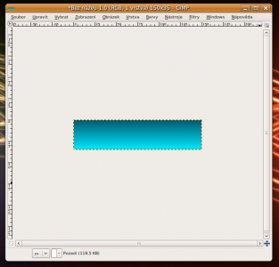
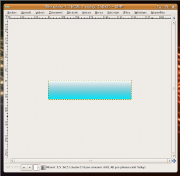
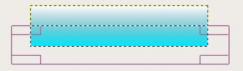
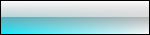
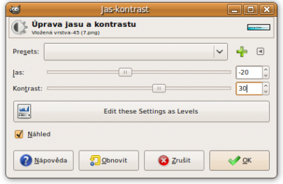

Web je již jen v režimu pro čtení a není možné přidávat nové komentáře nebo dotazy do fóra. Díky za přízeň.
Main menu
You are here
Skleněné tlačítko
28. October 2009 - 21:38 — Lukáš
- Vytvoříme nový obrázek s rozměry 150x35px
- Barvu popředí nastavíme na #005a71 a barvu pozadí na #00eaff
- Přepneme se na Přechod (L) a přetáhneme obrázek od shora dolů
 - Vytvoříme novou (průhlednou) vrstvu, pojmenujeme ji „Odlesk“
- Jako barvu popředí nastavíme bílou (#FFFFFF), režim přechodu nastavíme na „Popředí do průhlednosti“ a obrázek přetáhneme od shora dolů
 - Klepneme na nástroj „Obdélníkový výběr“ a označíme pomocí něj dolní část plátna. Viz. Obrázek níže:
 - Přejdeme na „Úpravy“ a zvolíme Vymazat (Delete)
- Nyní přidáme rámeček. Zvolíme Vybrat → Vše, Vybrat → Obvod. Hodnotu nastavíme na 1.
- Vytvoříme novou vrstvu. Nazveme ji „Rámeček“ a výběr vyplníme černou barvou.
- Vytvoříme novou vrstvu nazveme ji třeba „Přechod“
- Barvu popředí nastavíme na černou (#000000). Ujistíme se, že je režim přechodu nastavený na „Popředí do průhlednosti“ a opět přetáhneme obrázek se shora dolů a poté zprava doleva.
- Vrstvě přechod nastavíme režim na „Sytost“
 - Na tlačítko napíšeme libovolný text. Musí však být pod vrstvou „Přechod“ a pod odleskem. (Krytí vrstvy „Rámeček“ nastavíme na 20%)
- Nyní tlačítko dokončíme. Přejdeme na Úpravy → Kopírovat viditelné a Úpravy → Vložit.
- Přejdeme na Barvy → Jas-Kontrast a nstavíme následující:
 - Hotovo :)


{kind=link}
{kind=link}
{kind=link}
{kind=link}
{kind=link}
{kind=link}
{kind=link}
{kind=link}
{kind=link}
Zdroj: http://www.gimpusers.com/tutorials/create-soft-glassy-buttons.html
Kategorie:
Web je již ukončen. Nebude zde přibývat žádný nový obsah. Případné dotazy prosím na l.bacovsky(a)outlook.cz
Comments
Re: Skleněné tlačítko
Re: Skleněné tlačítko
Re: Skleněné tlačítko
Re: Skleněné tlačítko
Re: Skleněné tlačítko
Add new comment